扉页
版权页
京权图字：01-2013-7837
Published by arrangement with Oxford University Press for sale in the People's Republic of China only and not for export therefrom. This edition is for sale in the mainland of China only, excluding Hong Kong SAR, Macao SAR and Taiwan.
© Oxford University Press 2007
Oxford is a registered trademark of Oxford University Press
图书在版编目（CIP）数据
加拿大可以等：英汉对照 ／（英）福特（Ford, M.）著；（美）戴维斯（Davis, R.）绘；王莹译．— 北京：外语教学与研究出版社，2013.12
（书虫·牛津英汉双语读物）
书名原文：Five short plays
ISBN 978-7-5135-3930-2
Ⅰ．①加… Ⅱ．①福… ②戴… ③王… Ⅲ．①英语－汉语－对照读物②话剧剧本－作品集－英国－现代 Ⅳ．①H319.4：I
中国版本图书馆CIP数据核字（2013）第309214号
出版人 蔡剑峰
责任编辑 徐 宁
封面设计 蔡 颖
出版发行 外语教学与研究出版社
社 址 北京市西三环北路19号（100089）
网 址 http://www.fltrp.com
版 次 2014年1月第1版
书 号 ISBN 978-7-5135-3930-2
制售盗版必究 举报查实奖励
版权保护举报电话：（010）88817519
内容简介
内容简介
知道应该做什么事并不总是那么容易的。对这五个短剧里的人们来说，生活可能很艰难，偶尔还非常可笑。
哈里和他的朋友感觉厌烦透顶，因为他们身无分文。但是哈里有个计划可以改变这一切。这是一个不错的计划，但即便是最棒的计划也可能出严重的错误……
“听着，”罗恩说，“我那边的朋友有枪。把钱给我！现在就给我！”
“什么钱？”那个女人回答，“我很抱歉，这里不是银行，这里是图书馆。”
锡德和罗恩必须偷点什么东西，但要抢图书馆并不容易。那个女人高兴地把借书卡给了他们，这样他们可以借书，而不是偷书。事实上，她很乐意帮忙……
事情往往比表面上看起来要困难。但就像这些短剧中那样，当人们试图做正确的事情时，他们往往更有意思，也更加好笑。
FIVE SHORT PLAYS
FIVE SHORT PLAYS
It's not always easy to know the right thing to do. For the people in these five short plays, life can be difficult and sometimes very funny.
Harry and his friends are fed up because they haven't got any money. But Harry has a plan to change all this. It's a good plan, but even the best plans can go badly wrong...
'Listen,' says Ron, 'My friend over there has got a gun. Give me the money! Give it to me now!'
'What money?' the woman answers. 'I'm sorry, this is not a bank. This is a library.'
Sid and Ron must steal something, but it isn't easy to rob a library. The woman happily gives them library cards so they can borrow books, and not steal them. In fact, she's very pleased to help...
Things are often more difficult than they seem. But as in all these plays, people are often more interesting, and much funnier, when they're trying to do the right thing.
目录
The Robbery
The Robbery
INTRODUCTION
This play is about a group of five friends. They are fed up because they haven't got any money. But this is all going to change soon. One of the group, Harry, has a plan – a very good plan.
CHARACTERS IN THE PLAY
Harry
Sid
Wilf
Gladys
Ron
Three people reading in a library
Woman working in a library
PERFORMANCE NOTES
Scene 1: A room in the friends' home. There are chairs and a table. Everything looks very old and dirty. Wilf and Gladys are drinking tea. Ron is looking out of the window. Sid is watching the television, but it is not working.
Scene 2: Inside a library. There is a woman sitting at a table. She works in the library. Three other people are standing or sitting, holding books in their hands and reading.
You will need a table, chairs, an old television, two library cards and some books.
SCENE 1
The plan
Harry comes into the room. His friends look up at him.
HARRY
Hello, everyone. What are you doing?
SID
Nothing, Harry, nothing! What can we do? We haven't got any money.
HARRY
I know, I know. But it's OK. I have some work for us. We can make a lot of money.
WILF
Work? But you don't like work, Harry.
HARRY
Ah, but this work is different.
GLADYS
How, Harry? What are we going to do?
HARRY
We're going to rob a bank.
GLADYS
Rob a bank? But how can we?
HARRY
I have a plan, a very good plan.
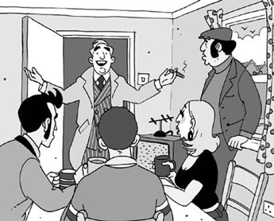
'I have a plan, a very good plan.'
WILF
Which bank are we going to rob?
HARRY
The Capital Bank.
WILF
Which one is that?
HARRY
The one next to the library in the High Street.
SID
That's a very big bank!
HARRY
Be quiet and listen. Now, I want Wilf to drive the car, and Gladys to stand outside the bank and watch the street.
WILF AND GLADYS
OK, Harry.
HARRY
Sid—
SID
(Excitedly) Yes, Harry? What do you want me to do?
HARRY
You must go into the bank and speak to everyone there. Say to them, 'Stay there! Don't move! I've got a gun in my pocket.'
SID
But Harry, we haven't got a gun.
HARRY
I know that! You just put your hand in your pocket like this. Move your hand up and down in your pocket and say, 'This is a gun!'
SID
I understand.
HARRY
Good. Now, Ron, I want you to go with Sid—
RON
Yes, Harry, and then what?
HARRY
Go to one of the bank workers and say, 'My friend has a gun. Give me the money!'
GLADYS
What are you going to do, Harry?
HARRY
I'm going to wait in the car with Wilf. Do you have any questions?
ALL
No.
HARRY
OK. So let's look at the plan again...
SCENE 2
The robbery
Sid and Ron run into the library. The people there look up from their books.
SID
Listen to me, all of you. This is a robbery. Don't move. I've got a gun in my pocket.
PEOPLE
Oh, don't shoot! Please don't shoot! We don't want to die.
SID
Nobody's going to die, but you must do what I say. (To Ron) Go on, Ron. What are you waiting for? Get the money! Quick!
Ron goes over to the woman who works there.
RON
Listen, my friend over there has got a gun. Give me the money! Give it to me now!
WOMAN
What money?
RON
What do you mean, 'What money?' The money in this bank, of course!
WOMAN
I'm sorry, this is not a bank. This is a library.
RON
What did you say – a library?
WOMAN
That's right. People come here to borrow books. We don't have any money here.
RON
Er, you don't have any money... Oh dear!... Sid! Sid!
SID
What? Have you got the money?
RON
There isn't any money. It's not a bank, Sid. We're not in a bank. This is a library!
SID
A library?
RON
That's right. They've only got books – lots and lots of books!
SID
Books? Well, get some of those, then. We must take something, or Harry's going to be angry.
RON
(To the woman) Give me lots of books!
WOMAN
Have you got a library card?
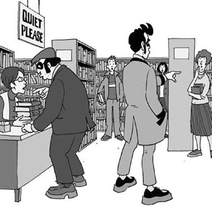
'Have you got a library card?'
RON
A card? No, I haven't.
WOMAN
I'm sorry, you can't borrow books without a library card.
RON
Look, you don't understand, we're not borrowing books, we're stealing them!
WOMAN
I'm sorry, but you can't do that.
RON
Sid, we can't steal books, she says.
SID
I've got a gun. Tell her that!
RON
My friend's got a gun and he knows how to shoot!
WOMAN
Look, it's not a problem. I can give you and your friend a library card. Then you can borrow the books and not steal them. What are your names?
RON
Oh, all right. I'm Ronald Savage, and he's Sidney Dupree.
WOMAN
(Writing) Ronald Savage... Sidney Dupree. And what's your address?
RON
27 Dunfore Road, Hamley.
WOMAN
(Writing) 27 Dunfore Road, Hamley. Good, here you are. (She gives Ron two library cards.) Now you can borrow some books.
RON
But I don't know anything about reading. You must help me. Which books are best?
SID
Quick, Ron! I can't stand here much longer.
WOMAN
Here are some good books for you. (She takes three books from the shelves.) The Great Train Robbery, The Return of Sherlock Holmes, and The Adventures of Robin Hood. They're all very famous books.
RON
Oh, that's nice. They look interesting. Thanks.
SID
Ron, come on! Quick!
RON
It's OK, Sid, I've got the books.
SID
All right. (To the people in the library) We're going now, but don't move. Don't move or talk for five minutes.
PERSON 1
Can we read?
SID
Er, all right. But you must read quietly, OK?
RON
Come on, Sid! Let's go. Harry and the others are waiting.
WOMAN
Goodbye, and happy reading!
RON
Oh yes, thank you. All right, Sid. I'm coming.
They run out of the library.
PERSON 2
Oh dear! I was so afraid!
WOMAN
Oh, they weren't so bad. The one called Sid – he didn't really have a gun, you know.
PERSON 3
Perhaps. But they were robbers. They wanted to rob the bank!
WOMAN
(Laughing) Yes, but they came into the wrong building!
PERSON 1
Why do you look so pleased?
WOMAN
Well, it's important for everybody to read books – not just you and me, but everybody... even bank robbers!
PERSON 2
But you aren't going to get those books back, are you?
WOMAN
Oh yes, I am. Remember, I've got their names and their address!
'Remember, I've got their names and their address!'
different adj. not like something or someone else, or not like before 不同的，不一样的
rob v. to steal money or things from a bank, shop etc, especially using violence 抢劫
library n. a room or building containing books that can be looked at or borrowed 图书馆
high street the main street of a town where most of the shops and businesses are （市镇商业区的）大街
understand v. to know the meaning of what someone is telling you, or the language that they speak 懂得，明白
shoot v. to make a bullet come out of a gun 开枪，射击
borrow v. to use something that belongs to someone else and that you must give back to them later 借，借入
steal v. to take something that belongs to someone else 偷，偷盗
address n. the details of the place where someone lives or works, that you use to send them letters, emails etc 地址
adventure n. an exciting experience in which dangerous or unusual things happen 冒险活动，冒险经历
quietly adv. without making much noise 轻声地
robber n. someone who steals money or property 抢劫者
important adj. having a big effect or influence on people's lives or on events in the future 重要的
remember v. to keep a particular fact about a situation in your mind 记住
抢劫
抢劫
内容简介
本剧是关于五个朋友的故事。他们感觉厌烦透顶，因为他们身无分文。但这一切很快就会改变。这五人组当中的一个，哈里，有一个计划——一个非常不错的计划。
剧中人物
哈里
锡德
维尔夫
格拉迪丝
罗恩
图书馆里的三个读者
图书馆里的一个女馆员
场景说明
第一场：五个朋友家中的一个房间。有若干椅子和一张桌子。所有东西看起来都非常陈旧和邋遢。维尔夫和格拉迪丝在喝茶。罗恩正望向窗外。锡德在看电视，不过电视坏掉了。
第二场：图书馆里。一个女人坐在桌旁，她是图书馆馆员。另外有三个人，有的站着，有的坐着，手里都拿着书在读。
你将需要一张桌子、若干椅子、一台旧电视、两张借书卡和一些书。
第一场 计划
哈里走进房间，他的朋友抬头看他。
哈里：
嗨，大家好。你们在做什么呢？
锡德：
没什么，哈里，没什么！我们能做什么呢？我们身无分文。
哈里：
我知道，我知道。但没关系，我给咱们找了些工作。我们可以大赚一笔。
维尔夫：
工作？你可不喜欢工作，哈里。
哈里：
啊，但是这工作可不一样。
格拉迪丝：
怎么个不一样呢，哈里？我们要做什么？
哈里：
我们要去抢劫银行。
格拉迪丝：
抢劫银行？可我们能怎么做呢？
哈里：
我有一个计划，一个非常棒的计划。
维尔夫：
我们要抢哪家银行？
哈里：
资本银行。
维尔夫：
那是哪一家？
哈里：
商业街上图书馆隔壁的那一家。
锡德：
那是一家很大的银行！
哈里：
安静一下，大家听我说。嗯，我想让维尔夫开车，格拉迪丝站在银行外面观察街道上的动静。
维尔夫和格拉迪丝：
好的，哈里。
哈里：
锡德——
锡德：
（兴奋地）怎么，哈里？你想让我做什么？
哈里：
你得走进银行里面，朝那里所有的人喊话。对他们说：“待在原地！不许动！我口袋里有枪。”
锡德：
但是哈里，我们并没有枪。
哈里：
这我知道！你只要把手像这样放在口袋里，上下动一动，然后说：“这是支枪！”
锡德：
我明白了。
哈里：
明白了就好。嗯，罗恩，我想让你和锡德一起去——
罗恩：
是的，哈里，然后呢？
哈里：
然后你走到其中一个银行工作人员面前说：“我的朋友有枪，把钱给我！”
格拉迪丝：
那你打算做什么，哈里？
哈里：
我会和维尔夫在车里等着。你们有什么问题吗？
所有人：
没有。
哈里：
好的，那就让我们再来看看这个计划……
第二场 抢劫
锡德和罗恩跑进图书馆，馆里的人从书本上抬起头来。
锡德：
你们所有人都听好了。这是抢劫，不许动，我口袋里有枪。
众人：
哦，别开枪！请不要开枪！我们不想死。
锡德：
没有人会死，可你们得按我说的做。（对罗恩）动手呀，罗恩。你还在等什么？去拿钱！快点！
罗恩走到那个女馆员面前。
罗恩：
听着，我那边的朋友有枪。把钱给我！现在就给我！
女馆员：
什么钱？
罗恩：
你说“什么钱”是什么意思？当然是这个银行里的钱！
女馆员：
我很抱歉，这里不是银行，这里是图书馆。
罗恩：
你说什么——图书馆？
女馆员：
没错。大家来这里是借书的，我们这里一分钱也没有。
罗恩：
呃，你们一分钱也没有……天哪……锡德！锡德！
锡德：
怎么啦？你拿到钱了没有？
罗恩：
这里一分钱也没有。这不是银行，锡德。我们不是在银行，这里是图书馆！
锡德：
图书馆？
罗恩：
没错。他们只有书——好多好多的书！
锡德：
书？好吧，那就拿些书。我们一定得带点什么东西走，要不然哈里会发火的。
罗恩：
（对女馆员）给我好多的书！
女馆员：
你有借书卡吗？
罗恩：
卡？我没有卡。
女馆员：
我很抱歉，没有借书卡的话不能借书。
罗恩：
听着，你没搞明白，我们不是要借书，我们是要偷书！
女馆员：
我很抱歉，可你们不能那样做。
罗恩：
锡德，她说我们不能偷书。
锡德：
我有枪，你告诉她！
罗恩：
我朋友有枪，而且他知道怎么开枪！
女馆员：
听我说，这不是问题。我可以给你和你的朋友办一张借书卡。这样你们就能借书了，不用偷书。你们叫什么名字？
罗恩：
噢，好吧。我叫罗纳德·萨维奇，他叫锡德尼·杜普雷。
女馆员：
（写下）罗纳德·萨维奇……锡德尼·杜普雷。你们住在哪里？
罗恩：
哈姆利区邓福路27号。
女馆员：
（写下）哈姆利区邓福路27号。好的，给你。（她递给罗恩两张借书卡。）现在你们可以借书了。
罗恩：
可是我对读书一窍不通。你得帮帮我。哪些书最好？
锡德：
快点，罗恩！我可不想在这里待下去了。
女馆员：
这里有些不错的书。（她从书架上取下三本书。）《火车大劫案》、《福尔摩斯归来记》和《罗宾汉历险记》，它们都是非常有名的作品。
罗恩：
哦，那太好了。它们看上去很有趣，谢谢。
锡德：
罗恩，好了！快点！
罗恩：
可以了，锡德，我拿到书了。
锡德：
好。（对图书馆里的人）我们现在要走了，不过别动。五分钟之内不许动，不许说话。
读者甲：
我们可以看书吗？
锡德：
呃，好吧。不过你们得安安静静地看书，懂吗？
罗恩：
好了，锡德！我们走吧。哈里和其他人在等着呢。
女馆员：
再见，祝你们读书愉快！
罗恩：
哦，好的，谢谢你。行了，锡德，我来了。
他们跑出图书馆。
读者乙：
天哪，吓死我了！
女馆员：
哦，他们也不是太坏。那个叫锡德的人——你们知道，他并没有真的拿枪。
读者丙：
也许吧。可他们是抢劫犯，他们想抢劫银行！
女馆员：
（笑起来）是啊，不过他们进错了地方！
读者甲：
为什么你看起来很高兴的样子？
女馆员：
嗯，读书对每个人来说都很重要——不仅仅是你和我，而是每一个人……甚至是银行抢劫犯！
读者乙：
不过你那些书可是拿不回来了，不是吗？
女馆员：
啊，不，拿得回来。别忘了，我有他们的姓名和地址！
The Right Thing to Do
The Right Thing to Do
INTRODUCTION
In this play a man is lying in the street. Three different people stop and look. Perhaps the man needs help. But they don't know him, so it's not their problem, is it? Then a woman in blue arrives and suddenly things are different.
CHARACTERS IN THE PLAY
Patrick
Rebecca
David
Woman in blue
Michael Scott, a man lying in the street
Doctor
Nurse
PERFORMANCE NOTES
For this play you will need a small bottle of pills, a glass of water, blue clothes for the woman, a white coat for the doctor, and perhaps special clothes for the nurse.
A man is lying in the street. Rebecca is walking past. She stops and looks at him, then she looks around her – there is nobody there. She starts to walk away, stops, and goes back to look at the man again. Patrick walks past and stops to look at the man.
PATRICK
What's the matter with him?
REBECCA
I don't know.
PATRICK
Is he dead?
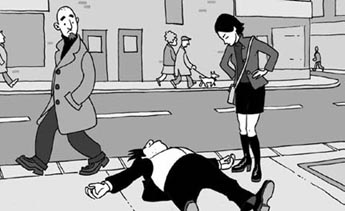
'Is he dead?'
REBECCA
No, he's alive, I think.
PATRICK
Are you going to help him?
REBECCA
Me? Why me?
PATRICK
You were here first.
REBECCA
Yes, I was, but—
David comes in.
DAVID
What's the matter with him?
PATRICK
We don't know.
DAVID
He looks ill.
REBECCA
His eyes are closed. Look!
DAVID
Perhaps he's asleep.
REBECCA
Asleep? In the street?
PATRICK
Wake him up then.
DAVID
Why me? You do it.
PATRICK
(To Rebecca) What about you?
REBECCA
Me?
PATRICK
Yes. You were here first.
REBECCA
Yes, but it's not my problem.
DAVID
And it's not my problem!
A woman in blue comes in. She kneels down at once to help the man.
REBECCA
Hey, what are you doing?
WOMAN
I'm helping this man, of course!
DAVID
Are you a doctor?
WOMAN
No, I'm not, but he needs help.
REBECCA
Do you know him?
WOMAN
No, I don't.
REBECCA
Then he's not your problem.
WOMAN
Oh, be quiet!
REBECCA
(To the others) Did you hear that? She said, 'Be quiet!'
WOMAN
Be quiet and help.
REBECCA
She said it again!
WOMAN
(To David) Go and call an ambulance.
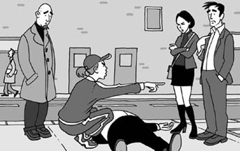
'Go and call an ambulance.'
DAVID
Me?
WOMAN
Yes, you. And be quick.
DAVID
But—
WOMAN
Be quick! (David goes away.) Now you – (turning to
Rebecca) go and get some water.
REBECCA
Where from?
WOMAN
From that house over there. Don't look at me like that. Go!
REBECCA
I'm going. (Rebecca goes away.)
WOMAN
(To Patrick) Feel his pulse.
PATRICK
But I—
WOMAN
Go on! Feel his pulse.
PATRICK
(Kneeling down and taking the man's pulse) Well, he's still alive. He's saying something!
WOMAN
What is he saying?
PATRICK
He said, 'Pills,' I think.
WOMAN
(To Patrick) Pills? Look in his pocket.
PATRICK
I can't do that!
WOMAN
Look in his pocket!
Patrick looks in the man's coat pocket.
PATRICK
There's a bottle with some writing on it.
WOMAN
What does it say? Read it!
PATRICK
It says, 'For the heart. If you feel ill, take one of these pills.'
Rebecca comes back with a glass of water.
REBECCA
I've got the water.
WOMAN
Good. (To Patrick) Give him one of the pills with some water.
Patrick helps the man to sit up. He gives him a pill and some water.
MAN
(Very quietly) Thank you, thank you!
PATRICK
How do you feel?
MAN
A little better now.
The woman in blue goes away. The others do not see this. David comes running back.
DAVID
The ambulance is coming.
PATRICK
Good.
DAVID
How is he?
REBECCA
He's feeling a little better.
A doctor and a nurse come in. Patrick stands up.
DOCTOR
(Kneeling down by the man) What's the matter?
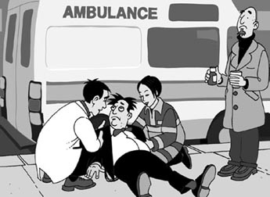
'What's the matter?'
MAN
I was ill. It was my heart. That man gave me one of my pills. I'm all right now.
The doctor and the nurse help him to stand up.
NURSE
What's your name?
MAN
Scott. Michael Scott.
DOCTOR
Michael Scott, the famous TV chef?
MAN
Yes, that's right.
NURSE
Come with us, Mr Scott. We'd like to take you to hospital.
MAN
But I feel better now.
NURSE
Perhaps, but you must go to hospital.
MAN
All right. (Turning to the others) Well, thank you very much, everybody.
DAVID
That's all right.
REBECCA
We're happy to help.
PATRICK
Get well soon.
MAN
Thank you again. Goodbye!
The doctor and the nurse help Scott to walk away.
REBECCA
He's alive, and he's going to be OK.
PATRICK
He's alive because we were here.
DAVID
Michael Scott—
REBECCA
The famous TV chef!
PATRICK
We can all feel very pleased, I think.
REBECCA
Oh yes, we can.
DAVID
What about the woman?
REBECCA
Which woman?
DAVID
The woman who helped. Where is she?
PATRICK
Oh, her! I remember. She didn't help us.
DAVID
'Do this, do that,' she said. 'Be quick!'
REBECCA
She said, 'Be quiet,' to me.
PATRICK
That's right. I didn't like her. Did you?
REBECCA
No, I didn't. Where is she now?
PATRICK
She walked away.
DAVID
That's right – she just walked away. She didn't want to help.
REBECCA
We did everything.
DAVID
Yeah. Everything.
PATRICK
Today was an important day for us.
DAVID
It was. We helped someone famous.
REBECCA
Because of us he didn't die.
DAVID
We were there for him.
PATRICK
It was the right thing to do.
REBECCA
Yes, it was. Well done, everybody!
DAVID
(To Rebecca) And well done to you—
PATRICK
Well done to all of us!
'Well done, everybody!'
alive adj. still living and not dead 活着的
asleep adj. sleeping 睡着的
kneel down to move into a position where your body is resting on your knees 跪下
ambulance n. a special vehicle that is used to take people who are ill or injured to hospital 救护车
feel/take someone's pulse count how many times someone's heart beats per minute 测某人的脉搏
writing n. words that have been written or printed 文字
nurse n. a person who helps people who are sick or hurt 护士
chef n. a skilled cook, especially the main cook in a hotel or restaurant 厨师；（尤指酒店或餐馆的）大厨
应该做的事
应该做的事
内容简介
在本剧中，一个男人躺在大街上。三个路人停下脚步来观望。也许那个男人需要帮助，可他们不认识他，所以这不是他们的问题，对吗？接着，一个蓝衣女人走过来，事情突然变得不一样了。
剧中人物
帕特里克
丽贝卡
戴维
蓝衣女人
迈克尔·斯科特，躺在大街上的男人
医生
护士
场景说明
演这部剧，你将需要一小瓶药丸、一杯水、蓝色女装、一件医生穿的白大褂，也许还要护士制服。
一个男人躺在大街上。丽贝卡走过时，停下脚步看看他，又环顾四周——周围一个人都没有。她准备走开，却又停下脚步，转回来再次看着那个男人。帕特里克走过时，也停下脚步看着那个男人。
帕特里克：
他怎么了？
丽贝卡：
我不知道。
帕特里克：
他死了吗？
丽贝卡：
不，我想他还活着。
帕特里克：
你打算帮他吗？
丽贝卡：
我？为什么是我？
帕特里克：
你先到这儿的。
丽贝卡：
是我先到的，不过——
戴维走过来。
戴维：
他怎么了？
帕特里克：
我们不知道。
戴维：
他看上去像是不舒服。
丽贝卡：
他的眼睛是闭着的。瞧！
戴维：
也许他是睡着了。
丽贝卡：
睡着了？在大街上？
帕特里克：
那把他叫醒吧。
戴维：
为什么是我？你来把他叫醒。
帕特里克：
（对丽贝卡）你来怎么样？
丽贝卡：
我？
帕特里克：
是呀。你先到这儿的。
丽贝卡：
你说得没错，不过这不是我的问题。
戴维：
这也不是我的问题！
一个蓝衣女人走过来。她立刻跪下来帮助那个男人。
丽贝卡：
嘿，你在干什么？
蓝衣女人：
我当然是在帮助这个人！
戴维：
你是医生吗？
蓝衣女人：
不，我不是，但他需要帮助。
丽贝卡：
你认识他吗？
蓝衣女人：
不，我不认识他。
丽贝卡：
那他就不是你的问题。
蓝衣女人：
嘿，安静！
丽贝卡：
（对其他人）你们听见了吗？她说“安静！”
蓝衣女人：
安静，过来帮忙。
丽贝卡：
她又说了这话！
蓝衣女人：
（对戴维）去叫救护车。
戴维：
我？
蓝衣女人：
是的，就是你。赶快去。
戴维：
可是——
蓝衣女人：
赶快！（戴维离开。）现在，你——（转向丽贝卡）去弄些水来。
丽贝卡：
到哪里弄？
蓝衣女人：
到那边的那座房子。别那样看着我。快去！
丽贝卡：
我这就去。（丽贝卡离开。）
蓝衣女人：
（对帕特里克）测他的脉搏。
帕特里克：
可是我——
蓝衣女人：
来呀！测他的脉搏。
帕特里克：
（跪下测那个男人的脉搏）哦，他还活着。他在说些什么！
蓝衣女人：
他在说什么？
帕特里克：
我想他说的是“药丸”。
蓝衣女人：
（对帕特里克）药丸？看看他的口袋。
帕特里克：
我不能那样做！
蓝衣女人：
看看他的口袋！
帕特里克看了看那个男人的外套口袋。
帕特里克：
里面有个瓶子，上面写了一些字。
蓝衣女人：
写的是什么？念一下！
帕特里克：
上面写着：“适用于心脏问题。如果感觉不适，服用一粒药丸。”
丽贝卡端着一杯水回来。
丽贝卡：
我弄到水了。
蓝衣女人：
好。（对帕特里克）用水给他服一粒药丸。
帕特里克扶那个男人坐起来，给他一粒药丸和一些水。
男人：
（声音微弱地）谢谢你，谢谢你！
帕特里克：
你感觉怎么样？
男人：
现在好点了。
蓝衣女人离开，但其他人没有看见。戴维跑回来。
戴维：
救护车马上就来。
帕特里克：
那就好。
戴维：
他怎么样？
丽贝卡：
他感觉好点了。
一位医生和一位护士走过来。帕特里克站起来。
医生：
（跪在那个男人身旁）怎么回事？
男人：
我觉得不舒服，是心脏的毛病。那个人给我服了一粒我带的药丸。我现在没事了。
医生和护士扶他站起来。
护士：
你叫什么名字？
男人：
斯科特，迈克尔·斯科特。
医生：
迈克尔·斯科特，电视上那位著名的大厨？
男人：
是的，没错。
护士：
跟我们走吧，斯科特先生。我们要送你去医院。
男人：
但我现在感觉好些了。
护士：
可能是这样。不过你还是得上医院。
男人：
好吧。（转向其他人）对了，非常感谢各位。
戴维：
别客气。
丽贝卡：
我们很乐意帮忙。
帕特里克：
祝你早日康复。
男人：
再次表示感谢，再见！
医生和护士搀扶斯科特离开。
丽贝卡：
他还活着，他会没事的。
帕特里克：
他还活着，是因为我们刚才在这儿。
戴维：
迈克尔·斯科特——
丽贝卡：
电视上那位著名的大厨！
帕特里克：
我想我们都有资格感到非常高兴。
丽贝卡：
哦，是的，没错。
戴维：
那个女人呢？
丽贝卡：
哪个女人？
戴维：
刚才帮忙的那个女人，她去哪里了？
帕特里克：
哦，她呀！我记得她。她并没有帮助我们。
戴维：
“做这个，做那个。”她说，“赶快！”
丽贝卡：
她对我说，“安静。”
帕特里克：
没错。我不喜欢她。你呢？
丽贝卡：
不，我也不喜欢她。她现在去哪里了？
帕特里克：
她走了。
戴维：
没错——她就那样走了。她并不想帮忙。
丽贝卡：
所有的事情都是我们做的。
戴维：
是呀。所有的事情。
帕特里克：
今天对我们来说是重要的一天。
戴维：
是的。我们帮助了一位名人。
丽贝卡：
因为我们他才没有丢掉性命。
戴维：
是我们帮助了他。
帕特里克：
这是应该做的事。
丽贝卡：
对。两位干得漂亮！
戴维：
（对丽贝卡）你也干得漂亮——
帕特里克：
我们大家都干得漂亮！
Canada Can Wait
Canada Can Wait
INTRODUCTION
This play is about a young person who wants to change his life. Chris would like to see new places and learn new things, but the older people in his life don't like his plan. They can only see problems. Chris finds that he, too, is a little afraid of change.
CHARACTERS IN THE PLAY
Chris, a young person who wants to travel
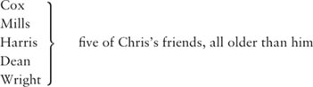
PERFORMANCE NOTES
At the beginning of the play Chris's friends are in a room. Cox is reading a book, Mills and Harris are talking quietly to each other, and Wright and Dean are looking out of a window.
You will need six chairs, a book, a bag and a map.
Cox, Mills and Harris are sitting in a room. Dean and Wright are standing by a window. Chris comes in.
CHRIS
(Smiling) Well, goodbye, everyone.
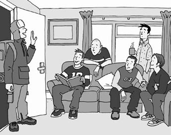
'Well, goodbye, everyone.'
COX
(Putting down his book) Are you going?
CHRIS
Yes, I must.
MILLS
When are you going?
CHRIS
Now.
COX
Now? So soon?
MILLS
Don't go!
CHRIS
But I must. I need a change.
HARRIS
What are you going to do?
CHRIS
I'd like to travel for a time.
HARRIS
Travel? How wonderful!
DEAN
Yeah, think of us when you're travelling.
COX
Yes, think of us – we have to stay here.
MILLS
It's the same old thing, day after day—
HARRIS
The same old faces.
WRIGHT
The same old problems.
MILLS
Nothing different for us!
DEAN
But someone has to do it.
COX
Yes, that's right. We can't all go!
CHRIS
Why not? You can travel too.
COX
Us? (He laughs.)
MILLS
How can we travel?
HARRIS
We have things to do here.
CHRIS
What things?
WRIGHT
He says, 'What things?'
DEAN
What a question!
COX
(To the others) He's tired of us.
CHRIS
No, I'm not. I'm not tired of you. I'm happy here.
MILLS
Are you?
CHRIS
Well, I was happy here. It's a good place, and I—
HARRIS
Yes?
CHRIS
Well, I like you. I'm one of you – one of the group.
WRIGHT
That's nice.
DEAN
So where would you like to go?
CHRIS
I don't know. Spain, perhaps, or Greece... maybe even Canada—
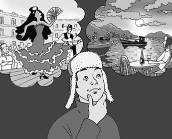
'Spain, perhaps, or Greece...'
COX
Canada?
CHRIS
Yes. I'm very interested in Canada.
MILLS
Canada, well!
HARRIS
That's interesting.
WRIGHT
You're very adventurous, Chris.
COX
We're not adventurous at all, I'm afraid.
DEAN
But then you're young—
COX
You have your life in front of you.
MILLS
You want to see exciting places—
HARRIS
Like Canada!
WRIGHT
The lakes and the forests...
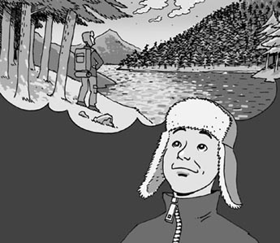
'The lakes and the forests...'
COX
The great St. Lawrence River...
DEAN
How wonderful!
COX
Lucky Chris!
MILLS
It's different for us. We have to stay here. We can't go to Canada.
HARRIS
'I'm one of you,' you said, 'one of the group.' But you're not!
DEAN
No, Chris, you're different from us—
CHRIS
No, I'm not! Stop talking like this. I'm not different from you. Sometimes I'm happy, sometimes I'm not. I work and eat and sleep, like you.
MILLS
Ah, but you are going away—
HARRIS
And we are staying here.
WRIGHT
And that makes you different.
CHRIS
I'm not different!
COX
But what about Canada?
CHRIS
Stop talking about Canada! I'm not going to Canada – I'd like to go there, that's all!
COX
So you aren't going there now?
CHRIS
I don't know. Perhaps. I need some time to think about my life.
WRIGHT
Oh, yes.
DEAN
Everyone does.
MILLS
It's usual for people to do that.
HARRIS
And there's lots of time. You're young.
CHRIS
That's right. I have my life in front of me.
HARRIS
So, take your time.
CHRIS
Right.
WRIGHT
You can stay here as long as you like—
DEAN
And think about it.
CHRIS
Yeah. (He sits down.)
ALL
Mmm...
Everyone is quiet for a moment.
COX
So what are you going to do?
CHRIS
Sorry?
MILLS
Are you leaving today?
CHRIS
Leaving? Er, not today. I want to think about it first.
MILLS
Of course.
HARRIS
When are you going, then?
CHRIS
Well, not now. Later, perhaps. I can stay here a bit longer. There's lots of time. (Laughing) Canada can wait, can't it?
WRIGHT
Yes, it can. It certainly can!
DEAN
You're one of us really, aren't you, one of the group?
CHRIS
Yes, I am, I think.
COX
(Laughing) But, you know, you say—
CHRIS
Yes? Say what?
COX
Well, you say some funny things sometimes!
CHRIS
Like what?
COX
Well, Canada!
Cox, Mills, Harris, Dean and Wright all laugh.
CHRIS
(Looking at them) What's so funny about that?
MILLS
(Laughing quietly) It doesn't matter.
HARRIS
Forget it.
COX
Look at the time – I must go!
MILLS
Me too. I have a lot to do.
HARRIS
And me.
WRIGHT
Let's all go.
DEAN
Yes, let's leave Chris with his dreams—
COX
About Canada!
They all laugh at Chris.
COX
See you later, Chris.
ALL
Bye-bye.
COX
(To Chris) Bye-bye, traveller!
Chris's friends laugh, and then go out. Chris stands and
watches them go. He doesn't look happy. He opens his bag
and takes out a large map. He opens the map on the floor and
looks at it carefully.
CHRIS
Thailand...Malaysia... Indonesia... Australia... (He looks up, smiling.) Mmm, Australia!
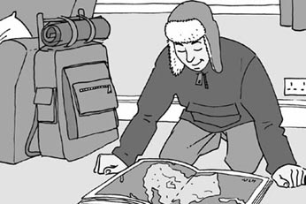
'Mmm, Australia!'
travel v. to go from one place to another, or to several places, especially ones that are far away 旅行
wonderful adj. making you feel very happy 令人高兴的，使人愉快的
tired of bored with something, because it is no longer interesting, or has become annoying 对……感到厌倦的
adventurous adj. eager to go to new places and do exciting or dangerous things 有冒险精神的，喜欢冒险的
exciting adj. making you feel excited 令人兴奋的
carefully adv. in a careful way 仔细地
加拿大可以等
加拿大可以等
内容简介
本剧是关于一个年轻人想改变生活的故事。克里斯想要见识新地方、了解新事物，但他周围年长一些的人不喜欢他的计划。他们看到的只有问题。克里斯发现，他自己也有点害怕改变。
剧中人物
克里斯，一个想旅行的年轻人
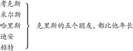
场景说明
在本剧一开始，克里斯的朋友在一个房间里。考克斯在看书，米尔斯和哈里斯在小声谈话，赖特和迪安正望向窗外。
你将需要六把椅子、一本书、一个背包和一张地图。
考克斯、米尔斯和哈里斯坐在房间里，迪安和赖特站在窗户旁边，这时克里斯走进来。
克里斯：
（露出笑容）那么，再见了，各位。
考克斯：
（放下手中的书）你要走了吗？
克里斯：
是的，我一定要走。
米尔斯：
你什么时候走？
克里斯：
现在就走。
考克斯：
现在就走？这么快？
米尔斯：
别走！
克里斯：
但我一定要走，我需要改变。
哈里斯：
你打算做什么？
克里斯：
我想旅行一段时间。
哈里斯：
旅行？多惬意啊！
迪安：
好吧，你旅行的时候要想到我们呀。
考克斯：
是啊，要想到我们——我们得待在这里。
米尔斯：
每天都是相同的那些事——
哈里斯：
相同的老面孔。
赖特：
相同的老问题。
米尔斯：
对我们来说没有任何变化！
迪安：
但必须有人作出一些改变。
考克斯：
是的，没错。但我们不能全都去！
克里斯：
为什么不可以？你们也可以旅行。
考克斯：
我们？（他笑起来。）
米尔斯：
我们怎么能旅行？
哈里斯：
我们在这里有事情要做。
克里斯：
什么事情？
赖特：
他问，“什么事情？”
迪安：
好一个问题！
考克斯：
（对其他人）他厌烦我们了。
克里斯：
不，我没有。我没有厌烦你们。我在这里很开心。
米尔斯：
是吗？
克里斯：
嗯，我过去在这里很开心。这是一个不错的地方，而且我——
哈里斯：
什么？
克里斯：
嗯，我喜欢你们。我是你们当中的一员——这个群体中间的一员。
赖特：
说得好。
迪安：
那么你想去什么地方呢？
克里斯：
我不知道。也许去西班牙，或者希腊……甚至有可能去加拿大——
考克斯：
加拿大？
克里斯：
是的，我对加拿大很感兴趣。
米尔斯：
加拿大，真想不到！
哈里斯：
有意思。
赖特：
你很有冒险精神，克里斯。
考克斯：
恐怕我们一点儿都不爱冒险。
迪安：
不过你还年轻——
考克斯：
你的人生还在前头。
米尔斯：
你想见识令人兴奋的地方——
哈里斯：
就像加拿大！
赖特：
那些湖泊和森林……
考克斯：
壮阔的圣劳伦斯河——
迪安：
太棒了！
考克斯：
幸运的克里斯！
米尔斯：
我们就不同了。我们得待在这里，不能去加拿大。
哈里斯：
这可是你说的，“我是你们当中的一员，这个群体中间的一员”。但你并不是！
迪安：
不，克里斯，你和我们不一样——
克里斯：
不，我没有！别这样说了。我和你们没有什么不同。有时候我开心，有时候我难过。我工作、吃饭、睡觉，和你们一样。
米尔斯：
啊，可你要离开了——
哈里斯：
而我们要待在这里。
赖特：
这就让你显得不一样了。
克里斯：
我没有不一样！
考克斯：
可你不是要去加拿大吗？
克里斯：
别再提加拿大了！我不是要去加拿大——我只是想要去那里，就是这样！
考克斯：
那么现在你不去那里了？
克里斯：
我不知道，也许吧。我需要一些时间思考一下我的人生。
赖特：
哦，是的。
迪安：
每个人都需要这样做。
米尔斯：
人们那样做是很平常的。
哈里斯：
而且你还有大把的时间，你还年轻。
克里斯：
说得对，我的人生还在前头。
哈里斯：
所以，慢慢来。
克里斯：
没错。
赖特：
你想在这里待多久就待多久——
迪安：
好好想想吧。
克里斯：
好的。（他坐下来。）
所有人：
嗯……
一时间所有人都陷入沉默。
考克斯：
那么你打算做什么？
克里斯：
你说什么？
米尔斯：
你今天会出发吗？
克里斯：
出发？呃，今天不会。我想先考虑一下这事。
米尔斯：
当然。
哈里斯：
那你什么时候动身？
克里斯：
这个嘛，反正不是现在。也许过些时候。我可以在这里多待上一阵。还有大把的时间。（笑起来）加拿大可以等，不是吗？
赖特：
是的，可以，当然可以！
迪安：
你确实是我们当中的一员，不是吗，这个群体中间的一员？
克里斯：
是的，我觉得我是。
考克斯：
（笑起来）不过，你知道，你说——
克里斯：
嗯？说什么？
考克斯：
嗯，有时候你会说些很奇怪的话！
克里斯：
比如什么？
考克斯：
嗯，加拿大！
考克斯、米尔斯、哈里斯、迪安和赖特都笑起来。
克里斯：
（看着他们）有这么好笑吗？
米尔斯：
（窃笑）无所谓了。
哈里斯：
别在意。
考克斯：
看看都几点了——我得走了！
米尔斯：
我也是，我有好多事情要做。
哈里斯：
还有我。
赖特：
我们都走吧。
迪安：
好，留克里斯自己在这里做梦吧——
考克斯：
做加拿大的梦！
他们都嘲笑克里斯。
考克斯：
回头见，克里斯。
所有人：
拜拜。
考克斯：
（对克里斯）拜拜，旅行家！
克里斯的朋友笑着走出房间。克里斯站在那里看着他们离开。他看起来不太高兴。他打开自己的背包，拿出一张大地图。他把地图摊开放在地板上，认真地看起来。
克里斯：
泰国……马来西亚……印度尼西亚……澳大利亚……（他抬起头，露出笑容。）嗯，澳大利亚！
Salt
Salt
INTRODUCTION
A man goes into a grocery store and buys a lot of salt. At first the other people in the store can't understand why. Then they hear his story, and they all want to buy salt too.
CHARACTERS IN THE PLAY
Shopkeeper, a person who owns a small grocery store
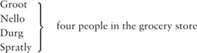
Manra, a truck driver
PERFORMANCE NOTES
Scene 1: In a small grocery store.
Scene 2: In a street, some hours later.
You will need ten bags of salt, and a small cart on wheels. You will need the noise of a truck stopping suddenly, but we do not see the truck.
SCENE 1
No more salt
In a small grocery store, Groot is asking the shopkeeper for something. The others are waiting behind him.
GROOT
I'd like ten bags of salt, please.
SHOPKEEPER
Ten? Of course. That's ten dollars, please.
GROOT
Here you are.
SHOPKEEPER
Can I help you with all that?
GROOT
No, thanks. I have this cart.
SHOPKEEPER
Ten bags. That's a lot of salt.
GROOT
Yes. Salt is very important, you know.
SHOPKEEPER
It is. But why do you need ten bags?
GROOT
Soon there isn't going to be enough salt in the world. I saw it on television.
SHOPKEEPER
Not enough salt? Really?
GROOT
It's true. So I'm buying some now. Goodbye!
He goes out with his cart.
NELLO
Did you hear that?
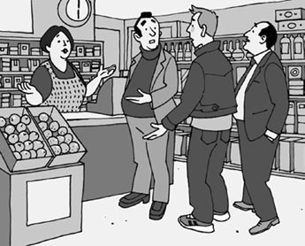
'Did you hear that?'
DURG
Yeah, there isn't enough salt in the world.
SPRATLY
Not enough salt? That isn't true.
NELLO
But he saw it on television. Soon there isn't going to be any in the stores.
SPRATLY
Really? That's bad – I need salt.
DURG
Me too. I can't live without it!
NELLO
(To the shopkeeper) Give me some salt, please, ten bags – no, make that twenty bags.
SPRATLY
And me. I'd like thirty bags.
DURG
Me first! I've got a big family. We need salt.
SHOPKEEPER
Be quiet, all of you! You must wait.
NELLO
But we want our salt.
DURG
And we want it now.
SHOPKEEPER
But that man bought my last ten bags.
SPRATLY
Then it's true! He was right – there isn't enough salt in the world. What are we going to do?
SHOPKEEPER
That's your problem. It's six o'clock – time to close the store. I'm going home.
NELLO
But what about our salt?
SHOPKEEPER
Look, there's a lot of salt in the world – enough for everybody. Goodbye!
They all go out.
SCENE 2
We want salt!
Spratly finds Groot standing in a street with his cart.
SPRATLY
Excuse me, I want to buy some salt.
GROOT
Sorry? What did you say?
SPRATLY
I know about the problem.
GROOT
What problem? What are you talking about?
SPRATLY
Soon there isn't going to be enough salt.
GROOT
Oh, you heard about that?
SPRATLY
Yes, and I want some salt.
GROOT
Then go to a grocery store and buy some.
SPRATLY
I can't find any. Every time I ask, the shopkeeper says, 'Sorry, no more salt.'
GROOT
Oh dear!
SPRATLY
But you have some. You bought ten large bags – I saw you.
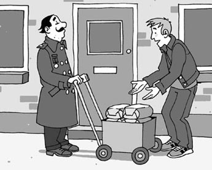
'But you have some.'
GROOT
I'm sorry, but I'm not selling my salt.
SPRATLY
But I'll give you ten dollars a bag.
GROOT
(Laughing) No, I want fifty dollars a bag! It's more expensive every day. Soon there isn't going to be enough.
SPRATLY
All right, all right, fifty dollars a bag! Give me five bags. Here's the money.
GROOT
Good man! You're doing the right thing.
Spratly goes out. Durg comes in.
DURG
Excuse me, I saw you buy some salt.
GROOT
Ah!
DURG
What's happening? I can't find any. The shopkeepers all say, 'Sorry. No more salt!'
GROOT
There's a problem.
DURG
I know. It was on television. Everybody is talking about it. Listen, I must have some salt.
GROOT
Sorry, I can't help you.
DURG
But I need it for my family. Please!
GROOT
All right, all right, but it's... er... a hundred dollars a bag.
DURG
Oh no!
GROOT
I told you – everybody wants salt. Well?
DURG
Oh, all right, then. Give me four bags.
GROOT
Four? Good! You understand the world, my friend. I see it in your face.
DURG
Here's the money.
GROOT
And here's your salt! Goodbye.
Durg goes out. Nello comes in.
NELLO
Hey, you, stop!
GROOT
Are you talking to me?
NELLO
Yes, you were in the grocery store—
GROOT
Was I? Perhaps. I go into a lot of grocery stores.
NELLO
You bought all the salt in the store!
GROOT
Well, there's a problem, you know.
NELLO
Yes, there is – and it's all because of you!
GROOT
That's not true!
NELLO
I met Spratly just now. He tried to sell me a bag of salt for five hundred dollars!
GROOT
That's too much.
NELLO
Of course it is – I know your plan! You go from store to store. You buy all the salt, and sell it for a lot more money!
GROOT
OK, it's true – I buy and sell salt – that's not wrong.
NELLO
Then sell some to me.
GROOT
No, I don't want to.
NELLO
(Holding him, angrily) Listen, I'm going to buy, and you're going to sell. (Shouting) Do you understand?
GROOT
But I've only got one bag left.
NELLO
(Angrily) Give it to me, then!
GROOT
It's two hundred dollars. Well, OK, you can have it for a hundred and fifty. But let me go!
NELLO
(Shouting) Give it to me!
GROOT
No, give me the money first. Now let me go! Oh, help! Help!
Groot runs out. We hear a truck stop suddenly, and Groot cries out. The driver, Manra, comes in, helping Groot to walk.
MANRA
He ran in front of my truck. I didn't see—
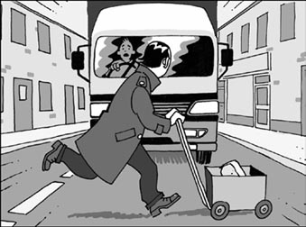
'He ran in front of my truck.'
NELLO
You didn't do anything wrong. It was an accident.
MANRA
But why did he run across the street without looking?
NELLO
I was angry with him. So he ran away.
MANRA
(To Groot) how do you feel?
GROOT
(Holding his leg) Oh, my leg! My leg hurts. I think it's—
NELLO
He's OK, I think.
MANRA
Wait a minute, what's this in the street?
NELLO
It's salt. He had a bag of salt and I wanted it.
MANRA
Salt? Well, that's interesting! I'm carrying salt on my truck – bags and bags of it!
NELLO
Salt? Oh no! (He laughs.)
MANRA
Why are you laughing?
NELLO
It doesn't matter. I can't tell you now.
MANRA
Then you can tell that policeman. Look, he's coming across the street now. He saw the accident, I think!
grocery store a building where people buy food and other small things for the home 食品杂货店
shopkeeper n. someone who owns or is in charge of a small shop 店主
television n. a piece of electronic equipment shaped like a box with a screen, on which you can watch programmes 电视
expensive adj. costing a lot of money 昂贵的
accident n. a situation in which someone is injured or something is damaged without anyone intending them to be 意外事件；事故
policeman n. a male police officer （男）警察
盐
盐
内容简介
一个男人走进食品杂货店买了很多盐。一开始商店里的其他人不明白为什么。接着他们听到了他的说法，于是他们也都想买盐。
剧中人物
小食品杂货店店主
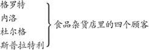
曼拉，卡车司机
场景说明
第一场：在一间小食品杂货店里。
第二场：几个小时之后，在一条大街上。
你将需要十袋盐，一辆小手推车。还需要有卡车急刹车的声音，但观众不会看到卡车。
第一场 没有盐了
在一间小食品杂货店里，格罗特正向店主买什么东西。其他人等在他身后。
格罗特：
请给我十袋盐。
店主：
十袋？当然可以。总共十美元，谢谢。
格罗特：
给您钱。
店主：
需要我帮忙拿吗？
格罗特：
不用了，谢谢。我有这辆手推车。
店主：
十袋。那可是很多盐。
格罗特：
是的。您知道，盐很重要。
店主：
是这样的。但您为什么需要十袋呢？
格罗特：
世界上的盐很快就会不够用了。这是我在电视上看到的。
店主：
盐不够用？真的吗？
格罗特：
是真的。所以我现在就赶紧买上一些。再见！
他推着手推车下场。
内洛：
你们听见他说的了吗？
杜尔格：
听见了，他说世界上的盐不够用了。
斯普拉特利：
盐不够用？那是瞎说。
内洛：
可这是他在电视上看到的。很快店里就不会再有盐卖了
斯普拉特利：
真的吗？那太糟了——我需要盐。
杜尔格：
我也是。没有盐，我的日子没法过下去！
内洛：
（对店主）请给我来些盐，十袋——不，来二十袋。
斯普拉特利：
还有我，我要三十袋。
杜尔格：
先给我！我有一大家子人，我们需要盐。
店主：
大家都安静！你们得等等。
内洛：
可是我们想要盐。
杜尔格：
我们现在就想要。
店主：
可刚才那个男人买走了我最后十袋盐。
斯普拉特利：
那是真的了！他说得对——世界上的盐不够用了。我们该怎么办呢？
店主：
那是你们的问题。现在六点了——到了店打烊的时间。我要回家了。
内洛：
可我们的盐怎么办？
店主：
听着，世界上的盐多得是——足够每个人吃的。再见！
他们一起下场。
第二场 我们想要盐！
斯普拉特利发现格罗特扶着手推车站在街上。
斯普拉特利：
打扰一下，我想买一些盐。
格罗特：
抱歉，你刚才说什么？
斯普拉特利：
我知道出问题了。
格罗特：
什么问题？你在说什么？
斯普拉特利：
很快盐就会不够用了。
格罗特：
哦，你听说这事了？
斯普拉特利：
是的，所以我想要些盐。
格罗特：
那去食品杂货店买一些呀。
斯普拉特利：
我买不到了。每次我问的时候店主都说，“对不起，没有盐了。”
格罗特：
天哪！
斯普拉特利：
但是你有盐。你买了十大袋盐——我亲眼看见的。
格罗特：
抱歉，可我不会卖的。
斯普拉特利：
那我每袋给你十美元。
格罗特：
（笑起来）不，每袋五十美元我才卖！这东西天天都在涨价。很快就会不够用了。
斯普拉特利：
好吧，好吧，一袋五十美元！给我五袋，这是你的钱。
格罗特：
你真明智！你做得对。
斯普拉特利下场，杜尔格上场。
杜尔格：
打扰一下，我看见你买了一些盐
格罗特：
啊！
杜尔格：
怎么回事？我哪里都买不到盐。店主们都说，“抱歉，没有盐了！”
格罗特：
出问题了。
杜尔格：
我知道。电视上说的。每个人都在谈论这件事。听着，我一定得买到些盐。
格罗特：
抱歉，我帮不了你。
杜尔格：
我的家人需要盐，拜托了！
格罗特：
好吧，好吧，不过这……呃……每袋要一百美元。
杜尔格：
啊，不是吧？
格罗特：
我跟你说过了——每个人都想要盐。你到底要不要？
杜尔格：
哦，那好吧。给我来四袋。
格罗特：
四袋？好的！老兄，你真是通世道。这一点我从你的脸上就能看出来。
杜尔格：
给你钱。
格罗特：
给你盐！再见。
杜尔格下场，内洛上场。
内洛：
嘿，你，站住！
格罗特：
你在和我说话吗？
内洛：
是的，你之前在食品杂货店——
格罗特：
是吗？也许吧。我去过很多食品杂货店。
内洛：
你把店里所有的盐都买走了！
格罗特：
嗯，出问题了，你知道的。
内洛：
是的，是出问题了——不过这一切都是因为你！
格罗特：
你瞎说！
内洛：
我刚才遇到斯普拉特利了。他想以五百美元的价格卖给我一袋盐！
格罗特：
那太贵了。
内洛：
当然贵了——我知道你的打算！你一家店一家店地跑。你把所有的盐都买走，然后再高价卖出去！
格罗特：
好吧，这是事实——我把盐买来又卖掉——可那并没有错。
内洛：
那卖一些给我吧。
格罗特：
不行，我不想卖给你。
内洛：
（抓住他生气地说）听着，我就要买，你就得卖。（大声喊道）你听明白了吗？
格罗特：
可我只剩一袋了。
内洛：
（生气地说）那就把这袋给我！
格罗特：
两百美元。嗯，好吧，可以一百五十美元卖给你。不过你得放开我！
内洛：
（大声喊道）把它给我！
格罗特：
不行，先给我钱。现在放开我！哦，救命啊！救命啊！
格罗特跑下场。传来一辆卡车急刹车的声音，接着格罗特大声尖叫。司机曼拉搀扶着格罗特走上场。
曼拉：
他跑到我的卡车前面，我没有看见——
内洛：
你没有做错什么。这是一个意外。
曼拉：
可他跑过大街的时候为什么不看路呢？
内洛：
我在对他发脾气，所以他跑掉了。
曼拉：
（对格罗特）你感觉怎么样？
格罗特：
（抱住自己的腿）哦，我的腿！我的腿好疼。我想是——
内洛：
他没事，我觉得。
曼拉：
等一下，街上的这个是什么东西？
内洛：
是盐。他有一袋盐，我想买过来。
曼拉：
盐？嗯，真有意思！我卡车上就装着盐呢——整袋整袋的盐！
内洛：
盐？哦，不是吧！（他笑起来。）
曼拉：
你为什么笑？
内洛：
没什么，我现在不能告诉你。
曼拉：
那你可以告诉那个警察。瞧，他这会儿正从街对面过来。我想他看到这场事故了！
Slow Food
Slow Food
INTRODUCTION
Maggie works in a fast-food restaurant. People come here to buy food when they haven't got much time. The restaurant sells 'fast food' – things like pizza, burgers, chicken and sandwiches. Five angry people are waiting for their food.
CHARACTERS IN THE PLAY
Maggie, a young woman who works in a fast-food restaurant
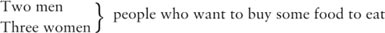
PERFORMANCE NOTES
In the window there is a sign saying, 'Fast Food'. There are some tables and chairs, and a large high counter. Maggie is standing behind this counter. The people in the restaurant are standing in front of it. They are wearing outdoor clothes. Maggie is wearing work clothes. She also needs a bag.
MAN 1
Excuse me, is my food ready?
MAGGIE
What did you ask for?
MAN 1
I asked for chicken.
MAGGIE
Er, let's see. Another five minutes.
MAN 1
Five minutes?
MAGGIE
Sorry, ten minutes.
MAN 1
Ten? That's no good! I must go back to my office in ten minutes.
MAN 2
And what about my food? I asked for a burger and French fries fifteen minutes ago!
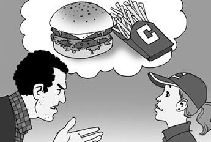
'I asked for a burger and French fries fifteen minutes ago!'
MAGGIE
I'm sorry, but there are a lot of people eating here today.
MAN 2
But how long is it going to take? My train leaves in forty minutes.
MAGGIE
Not long. I'm very sorry.
WOMAN 1
Excuse me, I was before these men. Where is my coffee?
WOMAN 2
And what about me? I asked for a sandwich and a coke half an hour ago.
WOMAN 3
Well, I'm before all of you. I asked for a pizza forty-five minutes ago.
MAN 1
Look here, in your window it says, 'Fast food'.
MAGGIE
Yes, it does.
MAN 1
Then why is it so slow?
MAGGIE
It isn't slow. But people today want everything faster and faster—
MAN 1
What are you talking about?
WOMAN 1
Look, I can't wait. I have to get back to work.
WOMAN 2
And I have a meeting. I'm late.
MAN 2
Time is money, you know!
WOMAN 3
Where's my pizza?
WOMAN 1
Where's my coffee?
MAN 1
What about my chicken?
PEOPLE
We want our food!

'We want our food!'
MAGGIE
Please, everybody! Please! Your food is coming. He's doing it now.
PEOPLE
He?
MAGGIE
Sorry, they. The chefs are doing it now.
MAN 2
How many chefs have you got?
MAGGIE
Oh, lots.
WOMAN 2
How many?
MAGGIE
Some.
WOMAN 1
How many exactly? Tell us!
MAGGIE
Er, twelve.
WOMAN 3
Your restaurant has twelve chefs?
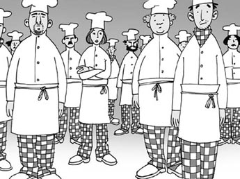
'Your restaurant has twelve chefs?'
MAGGIE
Well, no, not now. We had one in January, one in February, one in March – one every month for the last year. That makes twelve.
WOMAN 3
Well, where are they now?
MAGGIE
They all stopped working here.
WOMAN 1
Why did they leave?
MAGGIE
Because it was too fast for them.
MAN 2
And how many chefs have you got now?
MAGGIE
Well, er... one.
PEOPLE
One!
MAGGIE
No, sorry. That's wrong—
MAN 1
I'm happy to hear it!
MAGGIE
We haven't got any.
PEOPLE
What?
MAGGIE
That's right. There's only me here. Our last chef left yesterday. He was fed up with fast food.
MAN 2
Fed up?
MAGGIE
Yes. He said to me, 'That's it! Enough! No more fast food for me! I'm going!' And he went.
WOMAN 2
But what about our—
MAGGIE
And do you know? I'm fed up too. Yes, I'm really, really fed up. Fast chicken, fast burgers, fast French fries, fast coke, fast coffee, fast talking, fast walking, fast eating, fast sleeping, fast living, fast dying! I'm fed up with it all!
WOMAN 1
But who is going to—
MAGGIE
What's the matter with everybody these days? Why is everything so fast? Come here. (Maggie walks to the window.) Come on! (The people all go to the window.) Look outside. Go on, look! It's a beautiful day. Life is beautiful. We can all be happy. But first we must slow down. We must take the time to live.
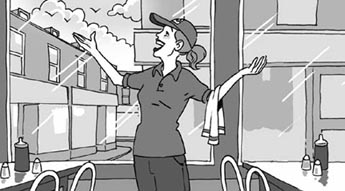
'We must take the time to live.'
MAN 1
Live? But we have to work!
WOMAN 3
We have lots to do.
WOMAN 1
And we want food.
MAN 2
We want fast food—
WOMAN 1
Not slow food!
WOMAN 2
We haven't got time to—
MAGGIE
Time! Time! Time! Don't talk to me about time. You don't understand it. You – oh, it's no good, you're not listening to me.
She takes off her work clothes and picks up a bag.
WOMAN 3
Hey, where are you going?
MAGGIE
I'm going out. I'm going to sit in the sun. I'm going to look at the sky and listen to the sea. I'm going to do nothing... slowly!
WOMAN 1
But what about our food?
MAN 2
What about my burger?
MAGGIE
You can do it!
MAN 2
What did you say?
MAGGIE
I said, you can do it. Behind me is the kitchen. In the kitchen there's a big bag of chicken and another bag of burgers. You can do your own food, and you can do it as fast as you like. Goodbye!
PEOPLE
But we don't—
MAGGIE
And have a nice day!
She goes out.
French fry a long thin piece of potato that has been cooked in hot oil 薯条
sandwich n. two pieces of bread with cheese, meat, vegetables, cooked egg, etc between them 三明治
restaurant n. a place where you can buy and eat a meal 饭店，餐馆
beautiful adj. very good or giving you great pleasure 美好的，美妙的
慢餐
慢餐
内容简介
玛吉在一家快餐店工作。人们时间紧张的时候就来这里购买食物。这家店出售“快餐”——像比萨、汉堡、鸡肉、三明治之类的东西。五个怒气冲冲的人正在等他们的食物。
剧中人物
玛吉，快餐店的一位年轻女店员
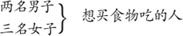
场景说明
橱窗里面有一块牌子写着“快餐”。店里有一些桌子和椅子，还有一个很大、很高的柜台，玛吉就站在这个柜台后面。到快餐店就餐的人站在柜台前面。他们穿着户外服装。玛吉穿着工作服，她还需要一个背包。
男人甲：
对不起，我的食物做好了吗？
玛吉：
您要的是什么？
男人甲：
我要的是鸡肉。
玛吉：
呃，让我看看。还要五分钟。
男人甲：
五分钟？
玛吉：
抱歉，是十分钟。
男人甲：
十分钟？那可不行！我得在十分钟之内赶回办公室。
男人乙：
那我的食物怎么样了？十五分钟之前我就要了一个汉堡加薯条！
玛吉：
抱歉，不过今天有很多人到这里用餐。
男人乙：
那到底要等多久？我的火车还有四十分钟就要开了。
玛吉：
不会太久的，我很抱歉。
女人甲：
不好意思，我排在他们两位之前。我的咖啡呢？
女人乙：
还有我的呢？半个小时之前我就要了一个三明治和一份可乐。
女人丙：
行了，我排在你们所有人前面，四十五分钟之前我就要了一份比萨。
男人甲：
看看这里，你们的橱窗里写着“快餐”。
玛吉：
是的，确实是这样。
男人甲：
那为什么做得这么慢呢？
玛吉：
不慢呀。只不过如今人们希望一切都越来越快——
男人甲：
你在说些什么啊？
女人甲：
听着，我等不了了。我得回去工作。
女人乙：
我要开一个会，我迟到了。
男人乙：
你要知道，时间就是金钱！
女人丙：
我的比萨在哪里？
女人甲：
我的咖啡在哪里？
男人甲：
我的鸡肉怎么样了？
众人：
我们要我们的食物！
玛吉：
拜托了，各位！拜托了！你们的食物就来了。他这会儿正做着呢。
众人：
他？
玛吉：
抱歉，是他们。厨师们这会儿正在做着呢。
男人乙：
你们有多少位厨师？
玛吉：
哦，有很多。
女人乙：
有多少？
玛吉：
有一些。
女人甲：
到底有多少？告诉我们！
玛吉：
呃，十二位。
女人丙：
你们店里有十二位厨师？
玛吉：
啊，不是，现在不是。我们一月份有一位，二月份有一位，三月份有一位——去年每个月有一位。算下来总共是十二位。
女人丙：
那他们现在在哪里呢？
玛吉：
他们全都不在这里工作了。
女人甲：
他们为什么走了？
玛吉：
因为这里对他们来说太快了。
男人乙：
那你们现在有多少位厨师？
玛吉：
这个嘛，呃……一位。
众人：
一位！
玛吉：
不是的，抱歉，我说错了——
男人甲：
我很高兴听你这么说！
玛吉：
我们一位厨师也没有。
众人：
什么？
玛吉：
是的，这里只有我一个人。我们最后一位厨师昨天离开了。他厌倦了快餐。
男人乙：
厌倦了？
玛吉：
是的。他对我说，“够了！我受够了！我再也不想做什么快餐！我要走人了！”说完他就离开了。
女人乙：
那我们的——
玛吉：
而且你们知道吗？我也厌倦了。是的，我是真的真的厌倦了。快速鸡肉、快速汉堡、快速薯条、快速可乐、快速咖啡、快速说话、快速走路、快速吃饭、快速睡觉、快速生活、快速死亡！我厌倦了所有这一切！
女人甲：
那谁来——
玛吉：
现在的人都是怎么回事？为什么一切都要这么快呢？你们过来。（玛吉走向橱窗。）来呀！（众人都走向橱窗。）看看外面。来看看！这是美好的一天。生活很美好。我们都可以过得很开心。可我们先得慢下来。我们必须慢慢地享受生活。
男人甲：
享受生活？可我们得工作！
女人丙：
我们有好多事情要做。
女人甲：
而且我们要吃东西。
男人乙：
我们要吃快餐——
女人甲：
不要慢餐！
女人乙：
我们没有时间——
玛吉：
时间！时间！时间！别跟我提时间。你们都不明白。你们——哦，这没用，你们不会听我的。
她脱下工作服，拎起背包。
女人丙：
嘿，你要去哪里？
玛吉：
我要到外面去。我要坐在阳光下。我要去看看天空，听听大海的声音。我要什么事情都不做——慢慢地享受！
女人甲：
可我们的食物怎么办？
男人乙：
我的汉堡怎么办？
玛吉：
你们可以自己做嘛！
男人乙：
你说什么？
玛吉：
我说，你们可以自己做。我身后就是厨房。厨房里有一大袋鸡肉，还有一袋汉堡。你们可以自己制作食物，想做多快就做多快。再见！
众人：
可我们没有——
玛吉：
祝你们度过愉快的一天！
她下场。
ACTIVITIES: Before Reading
ACTIVITIES
Before Reading
1 Here are the five play titles. Which of the five characters and five things below belongs to each play? Can you guess?
| The Robbery | a shopkeeper | a map |
| The Right Thing to Do | an office worker | a pizza |
| Canada Can Wait | a traveller | a bottle of pills |
| Salt | a TV chef | a library card |
| Slow Food | a librarian | fifty dollars |
2 There is a character called Chris in Canada Can Wait. What can you guess about him?
1) He wants to work in / visit Canada.
2) Canada is the only place / one of the places he wants to visit.
3) His friends / family want to go to Canada.
3 One of the plays is called Slow Food. What do you think this means? Circle Y (Yes) or N (No) for each answer.
Food
1) which is bad for you. Y / N
2) which everybody likes. Y / N
3) which takes a long time to grow. Y / N
4) which people need time to enjoy. Y / N
4 The first play is called The Robbery. Can you guess what is going to happen in this play? Use the words below to make some sentences about your guesses.
| Harry | watches for | Sid and Ron |
| Ron | waits outside | the robbers |
| Gladys | helps them to | the police |
| Wilf | wants to rob | with his gun |
| Sid | shoots someone | in the car |
| The police | asks for | borrow books |
| Other people | catch | a bank |
| The woman in the library | fight with | the money |
5 At the beginning of the second play, The Right Thing to Do, a man is lying in the street. What is going to happen? Can you guess? Tick one box for each sentence.
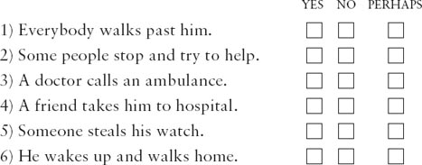
ACTIVITIES: While Reading
ACTIVITIES
While Reading
1 Read The Robbery. Are these sentences true (T) or false (F)?
1) When Harry arrives, his friends are working hard.
2) Harry wants them to rob a rich old lady.
3) Harry teaches Sid to shoot.
4) Wilf is going to put the money in a safe place.
5) Sid likes Harry's plan very much.
2 Before you read Scene 2, can you guess what happens?
1) Harry tells the police about the robbery.
2) The robbers fight with each other over the money.
3) There is no money to steal.
3 Read The Right Thing to Do. Who says these words? Who are they talking to? And who or what are they talking about?
1) 'Is he dead?'
2) 'Why me? You do it.'
3) 'He's not your problem.'
4) 'It was my heart.'
5) 'Where is she now?'
6) 'We were there for him.'
4 Read Canada Can Wait. Then circle the correct words in each sentence.
1) At the beginning Chris wants / doesn't want to leave.
2) Chris's friends think that he is tired of / happy with them.
3) They want to see Canada's cities / lakes and forests.
4) They have to visit Canada / stay at home.
5) At the end they all laugh / shout at Chris.
5 Read Salt, and then put this summary into the right order. Start with number 3.
1) Groot and Nello start fighting.
2) The shopkeeper closes the store.
3) Groot buys ten bags of salt from the shop.
4) Manra's truck hits Groot.
5) Spratly buys five bags of salt for $250.
6) Spratly tries to sell a bag of salt to Nello.
7) Durg buys four bags of salt for $400.
6 Read Slow Food. Underline the mistakes in this paragraph and then correct them.
On the counter there is a sign saying 'Slow Food'. Maggie is sitting at one of the tables. The first man is asking for a pizza. The second man wants chicken and French fries – he has to catch a bus in forty minutes. The three women are only waiting for drinks. They are all sorry for Maggie, because the food is so bad. Maggie loves her work.
ACTIVITIES: After Reading
ACTIVITIES
After Reading
1 Match these halves of sentences to make a summary of The Robbery. Use these words to join the sentences.
because but or so when
1) Sid and Ron wanted to steal some money,
2) Sid said, 'I've got a gun in my pocket,'
3) They couldn't steal any money,
4) They didn't want Harry to be angry,
5) The woman in the library can write to Sid and Ron,
6) ... they weren't in a bank.
7) ... she wants the books back.
8) ... perhaps steal some books.
9) ... they borrowed some books.
10) ... the woman in the library wasn't afraid.
2 Here are some new titles for the five plays. Which titles go with which plays? Which titles do you prefer? Why?
| Fast Living | Home's Best | Harry's Plan |
| Get Well Soon! | The Man with the Cart | The Dreamer |
| Time Is Money | Bad Hearts and Good | |
| The Right Price | The Wrong Building |
3 Use the clues below to complete this crossword with words from The Right Thing to Do. (All the words go across.)
1) The liquid in rivers, seas and lakes. (5)
2) The thing in the body that makes the blood go round. (5)
3) A glass or plastic container for holding pills. (6)
4) The opposite of dead. (5)
5) Someone whose job is to make ill people well again. (6)
6) Well known. (6)
7) A special car or van which carries people to hospital. (9)
8) A small bag in your clothes for carrying things. (6)

Can you find the two hidden words in the crossword?
1) What are the words?
2) Who said them, and why?
4 In Canada Can Wait, perhaps Chris wrote this letter to his friends the next day. Complete his letter with the groups of words below.
about it, exciting places, funny things, have to stay, in front of, tired of, try to stop, have a dream
Dear friends,
I'm leaving tomorrow. Please don't __________ me. I'm not going because I'm __________ you; I'm going because I want to travel. I'm young and I have my life __________ me.
I want to see __________, like Greece, Spain, and Australia. Canada can wait, perhaps, but not for me! Perhaps I do say__________ sometimes, but it's important to __________, isn't it? You can travel too, you know. You don't __________ with the same old faces and the same old problems day after day.
Think __________!
Yours, Chris
5 Perhaps this is what three of the people in Salt are thinking. Who are the people, and what is happening in the play?
1) 'Ah, good, time to go home. Chicken for dinner tonight, I think. I must remember to get some more salt tomorrow.'
2) 'Oh no! Is he dead? No, he's getting up – I haven't killed him! Why did he run into the road like that? Hey – you!'
3) 'I'm going to find that man and tell him what I think of him! I know his little plan. And I'm going to have some of his salt too!'
6 In Slow Food, perhaps Maggie writes an e-mail to her friend, Dave, the day after leaving her job. Use these words to complete her e-mail. (Use each word once.)
burger, chef, clothes, everything, food, restaurant, sea, work, yesterday
Hi Dave
Guess what! _____ I left my job at the fast-food _____! You see, I had to do _____ there, even the cooking, because the_____ left the day before. Everybody wanted their _____ so fast! I couldn't stay there any longer. So I took off my work_____ and just walked out. I went to sit by the _____, and looked at the sky, and felt a lot better. I'm going to look for some different _____ tomorrow – I never want to see a _____ again!
See you, Maggie
7 Do you agree (A) or disagree (D) with these ideas from the five plays? Explain why.
1) You must never walk past someone lying in the street.
2) It is important for everyone to have a dream.
3) People must learn to slow down and enjoy life more.
4) It is wrong to make a lot of money from buying and selling things.
封底
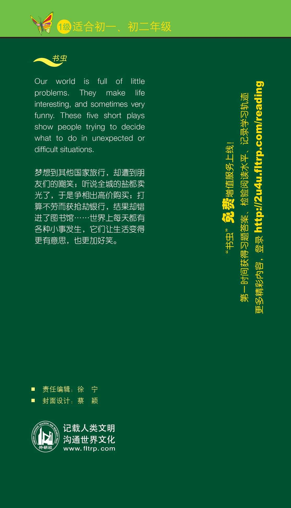